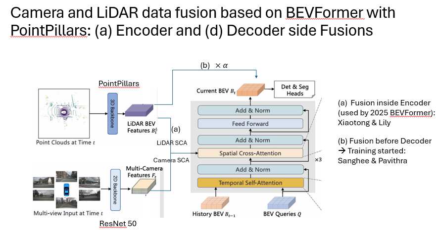

Chapter 0: System Overview¶
BEVFormerFusion --- Multi-modal 3D Object Detection via Camera-LiDAR Fusion in BEV Space
Navigation: Ch 0 -- Overview | Ch 1 -- Data Pipeline | Ch 2 -- Camera | Ch 3 -- LiDAR | Ch 4 -- Encoder Fusion | Ch 5 -- Decoder Fusion | Ch 6 -- Decoder | Ch 7 -- Heads | Ch 8 -- Loss & Training | Ch 9 -- Inference | Appendix A | Appendix B
1. Introduction¶
BEVFormer is a transformer-based framework that constructs a unified Bird's-Eye-View (BEV) representation from multi-camera images using spatial cross-attention and temporal self-attention. BEVFormerFusion extends the base architecture with three targeted additions that bring LiDAR into the loop without disrupting the proven camera pipeline.
Encoder-side fusion. Inside each BEV encoder layer, a parallel spatial cross-attention (SCA) branch queries the LiDAR BEV feature map alongside the original camera SCA branch. The two outputs are merged through a learnable blending weight, allowing the network to decide how much geometric detail to draw from each modality at every spatial location.
Decoder-side fusion. After the encoder produces the BEV embedding, a separate copy of the LiDAR BEV features is concatenated channel-wise with the encoder output. A linear projection compresses the fused representation back to the model dimension, giving the decoder's object queries access to a combined camera-LiDAR scene summary.
Velocity head. A dedicated prediction head estimates per-object velocity by cross-attending decoder queries to a camera-only clone of the BEV embedding --- one that has not been mixed with LiDAR. This preserves the temporal signal inherent in consecutive camera frames, which is essential for motion estimation and would be diluted by the single-frame LiDAR features.
2. End-to-End Architecture¶
The diagram below traces data from raw sensor inputs through feature extraction, BEV construction, fusion, decoding, and final predictions.
graph TD
%% ── Inputs ──────────────────────────────────────────────
CAM["Camera Images<br/>(6 surround views)"]
LID["LiDAR Point Cloud"]
%% ── Backbones ───────────────────────────────────────────
subgraph Backbone["Feature Extraction"]
direction TB
R50["ResNet-50 + FPN"]
PP["PointPillars Encoder"]
end
CAM --> R50
LID --> PP
R50 --> MSF["Multi-scale<br/>Camera Features"]
PP --> LBEV["LiDAR BEV<br/>Feature Map"]
%% ── BEV Encoder ────────────────────────────────────────
subgraph Encoder["BEV Encoder (4 layers)"]
direction TB
TSA["Temporal Self-Attention"]
SCA_CAM["SCA -- Camera Path"]
SCA_LID["SCA -- LiDAR Path"]
BLEND["Learnable Blend<br/>(w * cam + (1-w) * lid)"]
FFN_E["Feed-Forward Network"]
TSA --> SCA_CAM
TSA --> SCA_LID
SCA_CAM --> BLEND
SCA_LID --> BLEND
BLEND --> FFN_E
end
MSF --> SCA_CAM
LBEV --> SCA_LID
%% ── BEV Split ──────────────────────────────────────────
FFN_E --> BEV_OUT["Encoder BEV Output"]
BEV_OUT --> CLONE_CAM["Clone: Camera-Only BEV"]
BEV_OUT --> CONCAT["Concat + Linear<br/>(Decoder-Side Fusion)"]
LBEV --> CONCAT
%% ── Decoder ────────────────────────────────────────────
subgraph Decoder["BEV Decoder (6 layers, 450 queries)"]
direction TB
DEC_SA["Self-Attention"]
DEC_CA["Cross-Attention<br/>to Fused BEV"]
FFN_D["Feed-Forward Network"]
DEC_SA --> DEC_CA --> FFN_D
end
CONCAT --> DEC_CA
%% ── Prediction Heads ───────────────────────────────────
subgraph Heads["Prediction Heads"]
direction LR
CLS["Classification"]
BBOX["Bounding Box"]
YAW_BIN["Yaw Bin"]
YAW_RES["Yaw Residual"]
VEL["Velocity"]
end
FFN_D --> CLS
FFN_D --> BBOX
FFN_D --> YAW_BIN
FFN_D --> YAW_RES
FFN_D --> VEL
%% ── Velocity cross-attention to camera-only BEV ────────
CLONE_CAM -->|"cross-attn<br/>(temporal signal)"| VEL
%% ── Styles ──────────────────────────────────────────────
classDef input fill:#e8f4fd,stroke:#2196F3,stroke-width:2px,color:#0d47a1
classDef cam fill:#fff3e0,stroke:#ff9800,stroke-width:2px,color:#e65100
classDef lid fill:#e8f5e9,stroke:#4caf50,stroke-width:2px,color:#1b5e20
classDef fuse fill:#fce4ec,stroke:#e91e63,stroke-width:2px,color:#880e4f
classDef head fill:#f3e5f5,stroke:#9c27b0,stroke-width:2px,color:#4a148c
classDef enc fill:#fffde7,stroke:#fbc02d,stroke-width:2px,color:#f57f17
classDef dec fill:#e0f7fa,stroke:#00acc1,stroke-width:2px,color:#006064
class CAM,LID input
class R50,MSF cam
class PP,LBEV lid
class BLEND,CONCAT fuse
class CLS,BBOX,YAW_BIN,YAW_RES,VEL head
class TSA,SCA_CAM,SCA_LID,FFN_E enc
class DEC_SA,DEC_CA,FFN_D dec3. Three Innovations¶
3a. Encoder-Side Fusion¶
Within each of the four encoder layers, spatial cross-attention is executed twice --- once against camera features and once against the LiDAR BEV map. A per-channel learnable weight blends the two results before they enter the feed-forward network.
graph LR
BEV_Q["BEV Queries"]
subgraph DualSCA["Dual Spatial Cross-Attention"]
direction TB
SCA_C["SCA: Camera Features"]
SCA_L["SCA: LiDAR BEV"]
end
BEV_Q --> SCA_C
BEV_Q --> SCA_L
SCA_C -->|"weight w"| MIX["Blended Output<br/>w * cam + (1-w) * lid"]
SCA_L -->|"weight 1-w"| MIX
MIX --> NEXT["Feed-Forward → Next Layer"]
classDef cam fill:#fff3e0,stroke:#ff9800,stroke-width:2px,color:#e65100
classDef lid fill:#e8f5e9,stroke:#4caf50,stroke-width:2px,color:#1b5e20
classDef fuse fill:#fce4ec,stroke:#e91e63,stroke-width:2px,color:#880e4f
class SCA_C cam
class SCA_L lid
class MIX fuse3b. Decoder-Side Fusion¶
After the encoder, the BEV embedding is enriched with LiDAR information through a simple but effective concatenate-and-project operation. This gives every decoder query access to both modalities.
graph LR
ENC_BEV["Encoder BEV<br/>Output"]
LID_BEV["LiDAR BEV<br/>Feature Map"]
ENC_BEV --> CAT["Channel-wise<br/>Concatenation"]
LID_BEV --> CAT
CAT --> LIN["Linear Projection<br/>(2C → C)"]
LIN --> DEC["Decoder<br/>Cross-Attention Input"]
classDef cam fill:#fff3e0,stroke:#ff9800,stroke-width:2px,color:#e65100
classDef lid fill:#e8f5e9,stroke:#4caf50,stroke-width:2px,color:#1b5e20
classDef fuse fill:#fce4ec,stroke:#e91e63,stroke-width:2px,color:#880e4f
classDef dec fill:#e0f7fa,stroke:#00acc1,stroke-width:2px,color:#006064
class ENC_BEV cam
class LID_BEV lid
class CAT,LIN fuse
class DEC dec3c. Velocity Head with Camera-Only BEV¶
Velocity estimation relies on temporal cues --- the displacement of objects between consecutive frames. Because LiDAR BEV features capture only the current time step, mixing them into the velocity signal would dilute the frame-to-frame motion information carried by the camera branch. The velocity head therefore cross-attends exclusively to a camera-only clone of the BEV.
graph TD
ENC["Encoder BEV Output"]
ENC --> FUSED["Fused BEV<br/>(camera + LiDAR)"]
ENC --> CLONE["Clone: Camera-Only BEV<br/>(temporal signal intact)"]
FUSED --> DEC_Q["Decoder Queries"]
DEC_Q --> H_CLS["cls / bbox / yaw heads"]
DEC_Q --> VEL_HEAD["Velocity Head"]
CLONE -->|"cross-attention"| VEL_HEAD
VEL_HEAD --> VX_VY["Predicted (vx, vy)"]
classDef cam fill:#fff3e0,stroke:#ff9800,stroke-width:2px,color:#e65100
classDef fuse fill:#fce4ec,stroke:#e91e63,stroke-width:2px,color:#880e4f
classDef head fill:#f3e5f5,stroke:#9c27b0,stroke-width:2px,color:#4a148c
class CLONE cam
class FUSED fuse
class VEL_HEAD,H_CLS head4. Design Philosophy¶
Complementary Fusion¶
Encoder-side fusion operates at fine granularity: every BEV grid cell receives blended camera and LiDAR information through parallel cross-attention. Decoder-side fusion operates at coarse granularity: the entire BEV map is enriched with LiDAR context via concatenation before the decoder ever sees it. Together, the two stages give the model both local precision and global context from the LiDAR modality.
Temporal Signal Preservation¶
BEVFormer's temporal self-attention aligns the current BEV with the previous frame's BEV, encoding object motion implicitly. LiDAR features, captured at a single time step, contain no such inter-frame signal. By routing the velocity head to a camera-only BEV clone, the architecture ensures that temporal displacement information remains undiluted.
Gradient Isolation¶
Yaw angle is decomposed into a classification bin and a regression residual, each served by its own head. Velocity gets a dedicated head with its own cross-attention layer. This separation prevents gradient conflicts between fundamentally different tasks --- directional classification, angular regression, and motion regression --- and allows each head to specialize.
5. Chapter Guide¶
| Chapter | Title | Description |
|---|---|---|
| 0 | System Overview | High-level architecture, design philosophy, and chapter roadmap (this document). |
| 1 | Data Flow | End-to-end tensor journey from raw data loading through final predictions. |
| 2 | Backbone & Neck | ResNet-50 + FPN for cameras; PointPillars for LiDAR; feature dimensions. |
| 3 | BEV Encoder | Temporal self-attention, spatial cross-attention, and BEV grid construction. |
| 4 | Encoder-Side Fusion | Dual SCA branches, learnable blending weight, and training dynamics. |
| 5 | Decoder-Side Fusion | Concatenation, linear projection, and how decoder queries consume fused BEV. |
| 6 | Prediction Heads | Classification, bbox regression, yaw (bin + residual), and velocity heads. |
| 7 | Loss Functions | Per-head losses, weighting strategy, and Hungarian matching. |
| 8 | Training Pipeline | Config files, optimizer settings, augmentation, and distributed training. |
| 9 | Inference | Model loading, BEV cache, post-processing, and visualization. |
| A | Tensor Shapes | Reference table of key tensor dimensions at every stage. |
| B | File Map | Directory structure and mapping from concepts to source files. |
6. Architecture Reference¶
The following image provides a consolidated view of the full fusion architecture.
